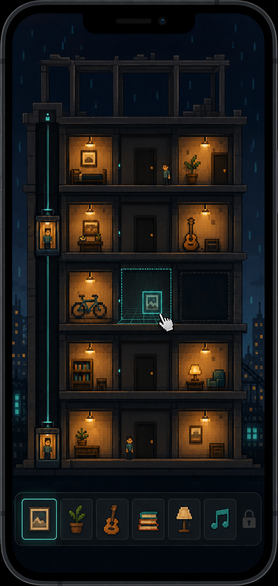
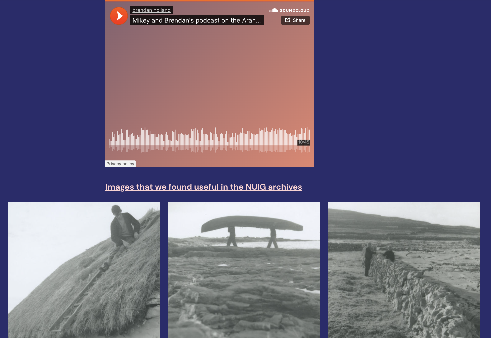
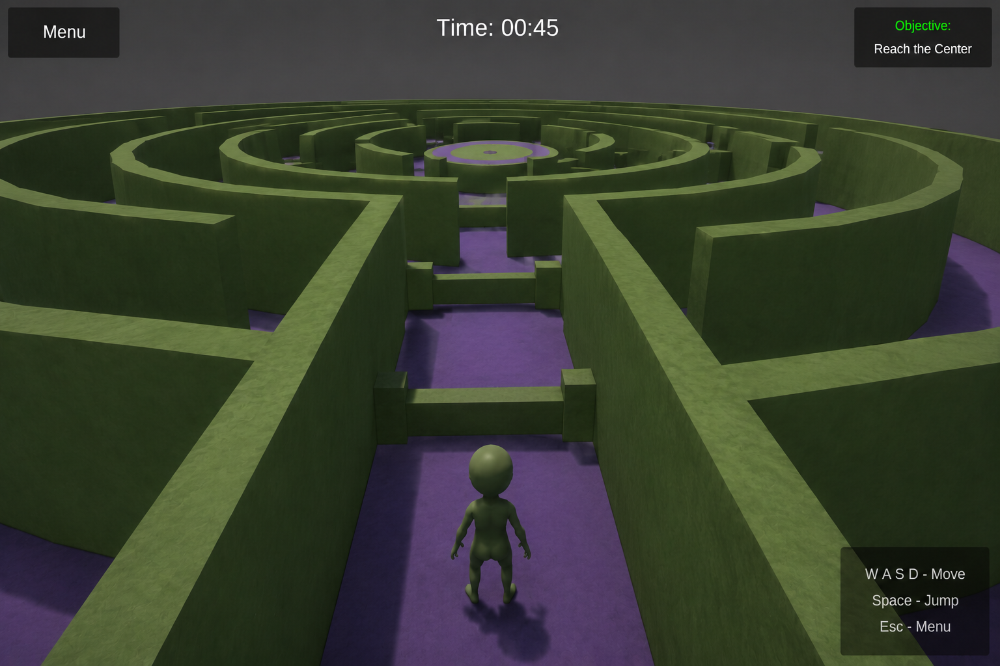
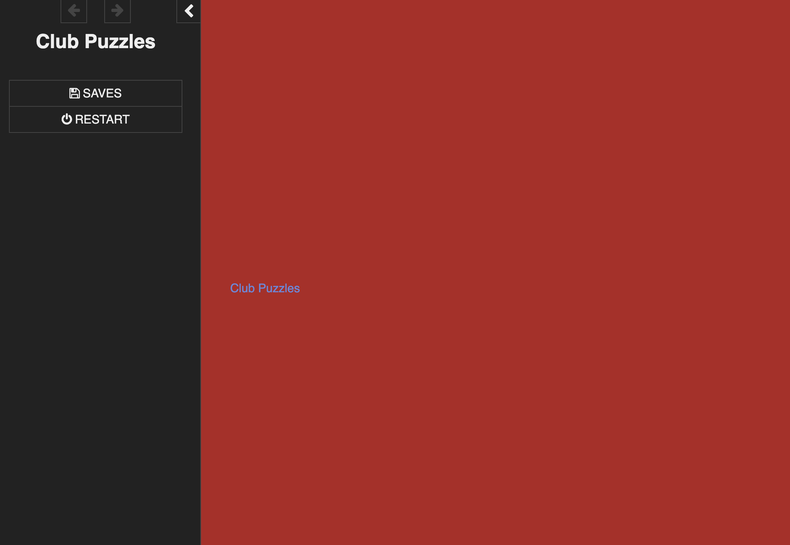

Work
Projects, room by room.
Each project shows the context, my role, the process and the outcome.
Room 01
Work in progressIdentity Hotel
- Context
- MSc research project exploring an alternative to comparison-driven social media.
- Concept
- A hotel as a metaphor for identity: floors and rooms hold memories, ideas and collections, and visitors get to know someone by wandering their space.
- Process so far
- Research question, literature review, proposal, lo-fi prototype in progress.
- Next
- Prototype build and user testing, 2026-27.

Room 02
Rewind the Turntables
- Context
- A three-episode podcast series on DJ culture, made during my undergraduate degree.
- My role
- Researching, hosting, recording and editing, including an episode with a live guest.
- Process
- Recorded and edited in Audacity, then combined with images for YouTube.
- Outcome
- Three published episodes: the history of DJing, equipment and mixing methods, and music genres.
3episodes
Episode 1: History of DJing
Episode 2: Equipment and mixing, with a live guest
Episode 3: Music genres in DJing
Room 04
The Mikey and Brendan Show: the Aran Islands
- Context
- Undergraduate podcast episode, December 2021, regarding the cultural history of the Aran Islands, where I used to live on Inis Oirr, and one side of my family is from.
- My role
- Relating to personal experiences to examine cultural history through research, recording and editing, alongside co-hosting with Brendan.
- Process
- Research in the NUIG archives, recording, editing tools like audacity, posting on WordPress and soundcloud.
- Outcome
- A podcast episode with a companion website of archive images.

Room 05
3D maze game
- Context
- 3D maze game, created alongside a friend during my undergraduate degree.
- My role
- We shared the development workload, I particuarly chose the idea and design.
- Process
- A final programming project, created using Unity and Java, with a focus towards an ambient feel to the game, with music and design.
- Outcome
- The original project files were lost; the representation shows how the game looked and played.

Room 03
Art video
- Context
- Recent project as part of the E3 Learning Foundry regarding technology.
- My role
- Filming, editing, concept
- Outcome
- A 19-second video piece.
19seconds
Room 06
Interactive web piece
- Context
- First-year undergraduate project: an interactive, text-based puzzle story played in the browser.
- Built with
- Twine, HTML and CSS.

Brand design for a start-up golf clothing label
Designing graphics for a new golf clothing brand in their January launch.